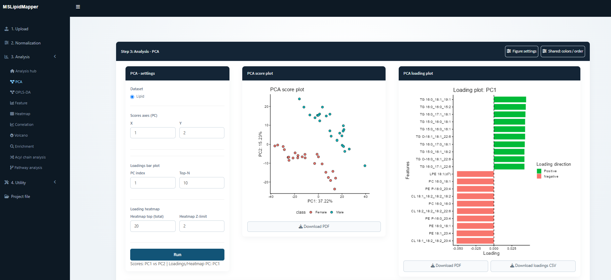
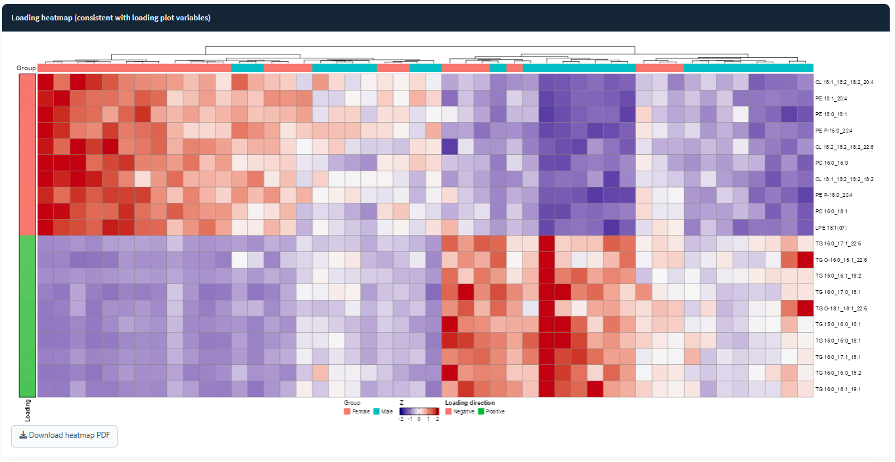

PCA
Explore sample variation and feature contributions with principal component analysis.
Principal component analysis (PCA)
Open 3. Analysis → PCA to explore variation across samples and the lipid features contributing to each principal component.
Configure and run PCA
- Select Lipid under Dataset.
- Under Scores axes (PC), set X to
1and Y to2to display PC1 against PC2. - Under Loadings bar plot, set PC index to
1and Top-N to10. The bar plot displays the ten most positive and ten most negative loadings for PC1. - For the loading heatmap, use Heatmap top (total) of
20and Heatmap Z-limit of2for this example. - Click Run.


Read the score and loading plots
Each point in the score plot represents a sample. Colors follow the current class values. In this example, metadata import set the groups to Female and Male. The axis labels report the variance explained by each component, with PC1 explaining 37.22% and PC2 explaining 15.23% in the supplied screenshot.
Examine the relative positions of samples, variation within groups, and any isolated points. PCA describes the major variation in the dataset. Assess group differences with the statistical analysis appropriate for your experiment.
The loading plot shows features with large positive and negative loadings on the selected component. Green bars indicate positive loadings and red bars indicate negative loadings. Interpret each feature's sign relative to the corresponding score axis. Changing PC index lets you inspect another component.
Inspect the loading heatmap
Scroll down to Loading heatmap (consistent with loading plot variables). Rows represent lipid features selected from the loadings, and columns represent samples. The top annotation shows the current sample groups. The left annotation shows loading direction on the selected component, with red for negative and green for positive loadings.
Cell colors show abundance standardized within each lipid feature. Red indicates values above that feature's mean, purple indicates values below it, and white is near the mean. The example uses a Heatmap Z-limit of 2, so standardized values outside the range from −2 to 2 are clipped to the color limits. The dendrogram above the columns shows sample clustering.


Click Download heatmap PDF beneath the heatmap to save it.
Customize and export
Use Figure settings to adjust appearance and Shared: colors / order to set group colors and ordering. Use Download PDF beneath each plot to save it and Download loadings CSV to export the loading values.
See Figure settings for shared group colors and display order.